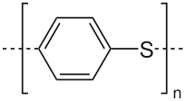
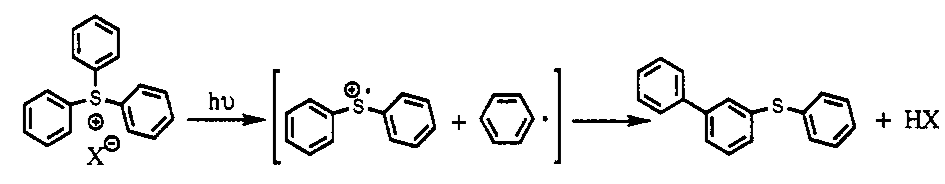
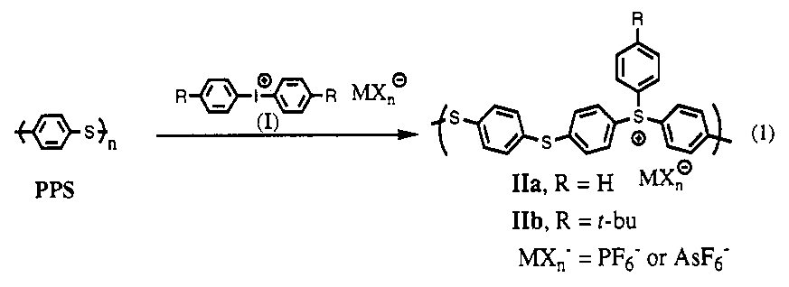

I’m a sucker for a good theory.
After getting my BA, I had no idea what I wanted to do with my life. A friend, perhaps exasperated with my refusal to commit to a career, introduced me to her brother-in-law, Bruce Novak, who had just gotten a position in the UC Berkeley Department of Chemistry. Bruce had recently finished his PhD at Cal Tech (under Grubbs, who, to name drop, would later win the Nobel Prize in Chemistry). Bruce needed someone to set up his lab and get projects started, and he asked me if I wanted to do it. I have no idea why he asked me – I had little more than a high school education in chemistry. Also, Bruce was a polymer chemist. Plastics. There’s a great future in plastics. Just not the future I wanted for myself. But hey, it was a paycheck, so I agreed.
I soon realized that polymer chemistry was the ultimate geek discipline: you build cool stuff at the molecular level. Some molecules have these properties, others have those properties. If you can hook them together in a polymer, you’ve now got a material that has both.
Bruce had a very clever idea. Polyphenylene sulfide (PPS) is a tough, light brown, sulfur-based organic polymer that is normally an electrical insulator. PPS p-orbitals overlap, however. Oxidation removes electrons from the overlapping orbitals, which then form a molecule-wide electron conduction band, very similar to the conduction band in metals. Upon this so-called “doping,” PPS becomes dark and shiny (just like metal!), and conducts electricity along its backbone. Yes, you can turn some plastics into “metals,” retaining advantages of both.
Here’s PPS (the bracket with the “n” subscript means repeat n times):

There was another group of sulfur-based molecules with a very similar chemical structure, triarylsulfonium salts, that were photo-reactive:

The key, here, is that when you photolyze this molecule (shine light on it, hv), you knock off one of the rings, creating a radical cation – a charged molecule with an unpaired electron (the S+ with the dot over it). If we could make a polymeric form of this molecule, which we dubbed arylated PPS (APPS), it would be very similar to PPS. When we hit it with light, the unpaired electron on the polymer backbone should convert APPS into a conducting polymer – “photo-doping.” In other words, we could imprint conducting circuits directly into a non-conducting plastic simply by exposing it to light.
Here was the reaction with which we hoped to create APPS (the polymer on the right hand side):

PPS was hard to work with. It would only dissolve in chloronapthalene at 220 C, conditions that destroyed the other starting material. After weeks of unsuccessful attempts, my undergraduate assistant, Anand Viswanathan, and I finally made something that looked like a light brown polymer, but unlike PPS, it dissolved in acetone at room temperature, as we predicted APPS would do.
What was it? What is photoreactive? Would it conduct electricity? I quickly made a thin film of the stuff. After it dried, I grabbed the lab multimeter, put it on the ohm setting, and stuck the probes on the film. The display was blank – no measurable conductivity. Good. Then I shined a UV light on the film. It turned dark and shiny. I put the probes on again, and the multimeter display started to blink, settling down in the MΩ range. The film was conducting electricity. Not well–it was almost beyond the sensitivity of the meter–but it was conducting!
Months of work followed to confirm we’d made what we thought we’d made, that it reacted with light the way we thought it should, and that electrical conduction was based on that radical on the polymer backbone. I did countless NMR’s, UV/vis spectrograms, elemental analyses, and electron spin resonance analyses that all pointed to the same conclusion: we had made APPS, and when we hit it with UV light, we would cleave off a phenyl group, forming a radical cation on the polymer backbone. The material would become reflective (an indicator that an electron conduction band had formed), and it would conduct electricity. When we quenched the radical cation with water, we eliminated electrical conductivity.
It was time to submit, to Science. Bruce gave me the first author slot. He waited patiently for me to finish my draft, and then rewrote the whole thing (precisely one sentence of mine remained).
While our paper was under review at Science, we wanted to determine the true conductivity of APPS, and increase it, if possible. The challenge was that as soon as we photolyzed the film, it would start to reflect light, limiting further photolyzation. We therefore had an extremely thin conducting layer, but our calculation of conductivity was based on the entire thickness of the, mostly unphotolyzed, film; our estimated conductivity value was therefore far too low. This problem was compounded by the fact that our low conductivity was near the limit that my multimeter could detect. Worse, the photolyzed film would immediately start to absorb moisture, which quenched the radical, killing the conductivity. We were confident that if we could solve these problems, we would achieve much higher conductivity than we had seen so far.
I had tried various quick-and-dirty solutions. I flooded the film with a stream of nitrogen, to keep off moisture, but the building nitrogen was contaminated with water. I pumped my equipment into a dry box, but the static electricity played havoc with my ohm meter. Plus, it was hard to work with a delicate film using large rubber gloves. I built a spinner that created ultra thin films of APPS, but this didn’t seem to improve the conductivity values, probably because my meter wasn’t sensitive enough.
We finally decided to do things right. We needed to run our experiments under dry nitrogen from start to finish, with the thinnest possible film, and with a conductivity meter that could accurately measure the very low values we would get with such a thin film.
We bought what was basically a $10,000 ohm meter that was orders of magnitude more sensitive than my multimeter, and I built a special airtight chamber with a UV light underneath a quartz plate (which transmits UV light), flooded with nitrogen straight off a liquid nitrogen dewar (dry dry dry). We would spin an ultra thin film of APPS on a quartz slide and let it dry in the chamber under a flood of dry nitrogen. We would then lower the conductivity probes and turn on the UV light. If everything worked, we should measure the true, and hopefully much higher, conductivity.
The day I finally had everything assembled, we heard back from Science. Our paper was accepted! The copy editing on our article was even already complete. If we could get the higher conductivity numbers in the paper, that would be icing on the cake.
I rushed into the lab and got the experiment running. I spun a fresh film and put it in the chamber. After a lengthy purge with dry nitrogen, I lowered the probes and measured the conductivity. Nothing. Good. I then flipped the switch on the UV light, and waited. Still no conductivity.
Huh?
I opened the unit to confirm that the probes were in contact with the film, and the conductivity meter started to register. Uh oh. I tried another film. Nitrogen purge + UV: zero conductivity. Open the unit: conductivity. I tried another film. Same thing: no conductivity until I exposed the film to air. And another. Same thing. The implication was obvious, and devastating to the project. I called Bruce in to show him what was happening. By this time, the entire lab had gathered around. Tom, my dour labmate, pronounced the epitaph: “It’s water.”
See that MX- in the figure, above right, hovering near the S+? APPS is a salt. Add water to salt, and you get electrical conduction, not by a cool electronic conduction mechanism along the polymer backbone, but by an ordinary ionic mechanism. All along we had been looking at ionic conduction in water absorbed from the air, not electronic conduction.
We thought we had ruled out ionic conduction. Ionic conduction would not make our film shiny and reflective. With an ionic conduction mechanism, which would not depend on the presence of a radical, water should have increased conductivity. When we deliberately added water to our film, though, it quenched the radical, and also the conductivity, as expected for the electronic mechanism. Somehow, the small amount of moisture in the air was enough to create a thin salty mixture that would conduct, but adding more water degraded the photolyzed polymer so it no longer did.
That afternoon, I flipped back through my lab book, looking at the notes I had taken on hundreds of experiments that mostly yielded positive results. How had I missed this? What I now saw was that every time I got a negative result under exceptionally dry conditions, I had dismissed it: the building nitrogen was wet; the static in the dry box was screwing with my electronics; the conductivity in such thin films was too low for my multimeter. Yet the truth was there, hovering like a Romulan battleship just at the edge of sensor range.
The frustrating thing was that all our chemistry was right. We had made what we thought we’d made – a brand new photopolymer – and it reacted with light the way we predicted. Every fact we reported, was, in fact, a fact (and our results were eventually published in a respectable journal). The problem is that the evidence for electronic conduction mechanisms in polymers is almost always circumstantial. The same evidence that demonstrated electronic conduction in other polymers was misleading in our case.
I had allowed myself to be seduced by a very plausible, and seemingly well-supported, theory.
Driving home that evening as the sun set over San Francisco Bay, I was upbeat, almost euphoric. The truth was, I didn’t want to be a polymer chemist. Over the past year, I had been sneaking off to attend classes by George Lakeoff, John Searle, and Brent Berlin. I was fascinated by theories of cognition and human nature, and I had been reading voraciously in linguistics, philosophy, and anthropology. If our work had been published in Science I would have felt obligated to continue on the project for at least another year, maybe more. Now, with our submission withdrawn and the project more or less dead, I was free.
A few weeks earlier, the same friend who had introduced me to Bruce bought me a book she had seen in a Berkeley bookstore: Intimate Fathers by Barry Hewlett, a study of parenting among Aka pygmies. This has “Ed” written all over it, she said. She was right.
I was jumping, though, from the frying pan into the fire. The cognitive and behavioral sciences, I would soon learn, are, like our APPS Science paper, based on seductive theories backed by circumstantial evidence.